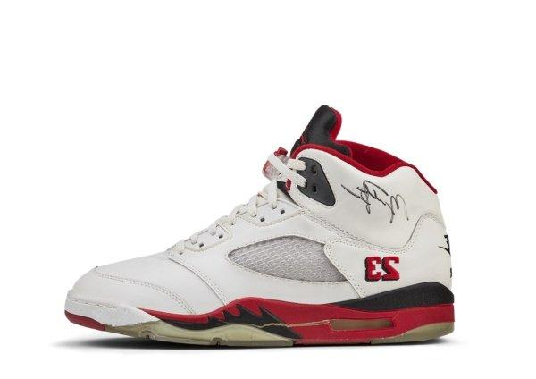

História do Air Jordan 5:
ançado em 1990 e mais uma vez assinado por Tinker Hatfield, o Air Jordan 5 foi inspirado nos caças de guerra da Segunda Guerra Mundial, especialmente nos P-51 Mustang, o que influenciou o design agressivo do tênis.
Ele trouxe elementos marcantes, como o “dente de tubarão” na entressola, a língua refletiva 3M, o uso de solado translúcido (ice) — uma inovação na época — e o número 23 bordado em algumas versões, algo inédito até então.
Michael Jordan teve grandes atuações com o AJ5, incluindo jogos em que marcou mais de 60 pontos. O tênis também se tornou um ícone fora das quadras, sendo amplamente usado na cultura hip-hop e urbana dos anos 90.